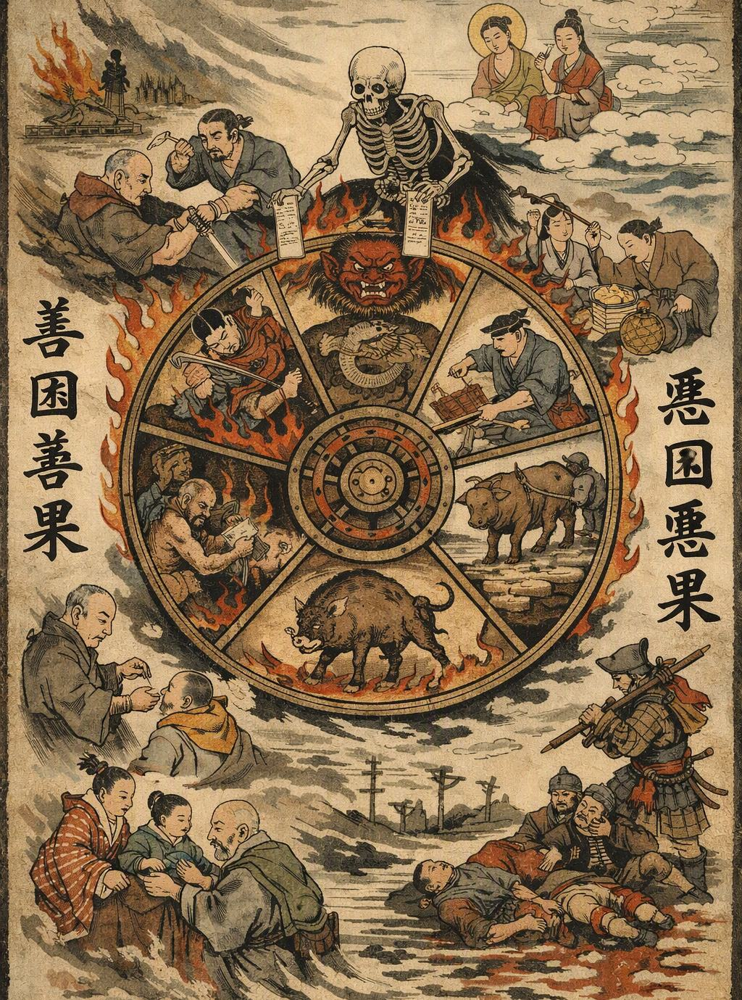
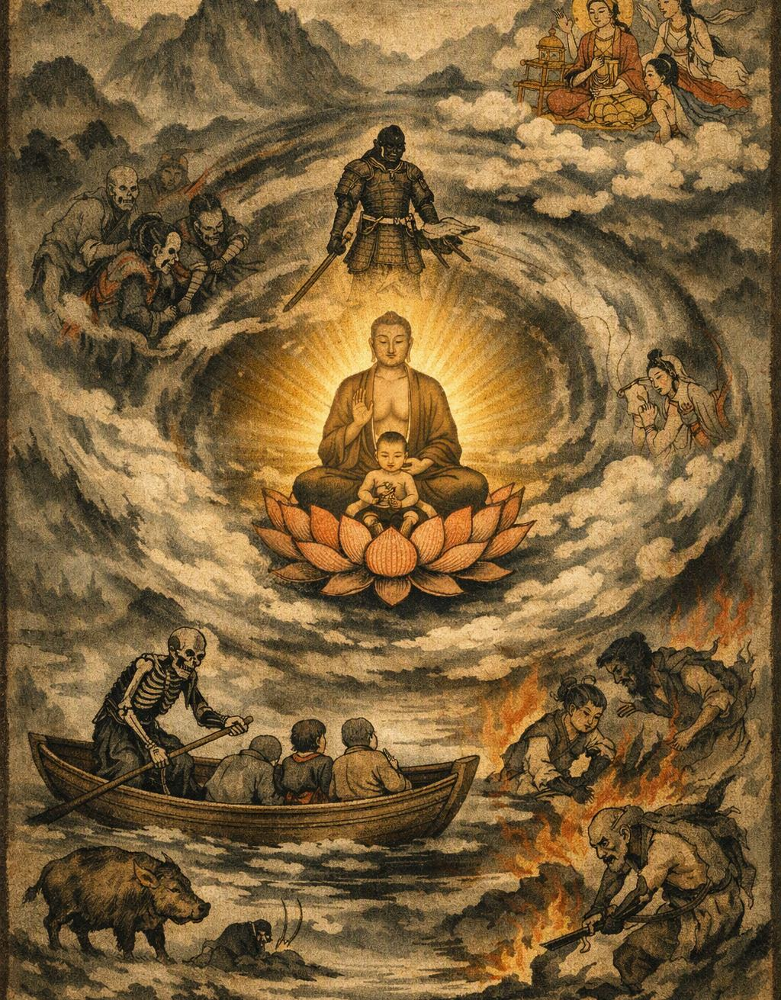
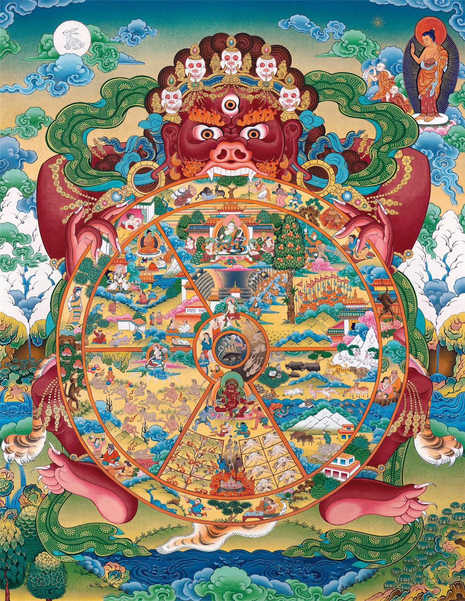

Карма и Перерождение
Карма - это закон причин и последствий, которому подчинены все живые существа.

Карма
Карма - это закон причин и последствий, которому подчинены все живые существа.
Каждое намерение, слово и поступок оставляют свой след. Тот, кто помогает другому, сеет семя добра. Тот, кто причиняет страдание из злобы или ненависти, сеет семя страдания.
Карма не является наказанием, посланным богами. Никто не стоит над человеком с мечом суда. Сам человек своими поступками определяет плоды, которые однажды ему предстоит вкусить. Подобно крестьянину, бросающему семя в землю, мы не можем ожидать иного урожая, кроме того, что сами посеяли.

Перерождение
Смерть не является концом пути.
Когда тело человека становится прахом, течение его существования продолжается. Подобно пламени одной свечи, зажигающему другую, одна жизнь связана со следующей, хотя они не являются одной и той же жизнью. То, что человек совершал в своей жизни, становится частью его дальнейшего пути.
Поэтому мудрый человек помнит о смерти не для того, чтобы бояться её, а для того, чтобы правильно прожить сегодняшний день.

Сансара
Круг рождения, смерти и нового рождения называется сансарой.
Пока сердце человека связано с жаждой, ненавистью и невежеством, он остаётся странником на этой бесконечной дороге. Он может родиться среди богатства или бедности, стать господином или простым крестьянином, воином или монахом. Но ни богатство, ни власть не способны навсегда избавить его от страдания.
Потому Будда указал путь, ведущий не к лучшей жизни в сансаре, а к освобождению от самого круга.
Плоды поступков
Не думай, что малое деяние не имеет значения.
Как маленькая искра способна разжечь большой огонь, так и один поступок способен изменить жизнь человека. Доброе слово может утешить сердце. Милосердие может спасти жизнь. Жестокость может оставить рану, которая не исчезнет долгие годы.
Поэтому прежде чем поднять руку, произнести слово или сделать шаг, спроси себя: какой плод принесёт это деяние?
Мир приходит изнутри. Не ищи его снаружи.Будда Шьякмуни